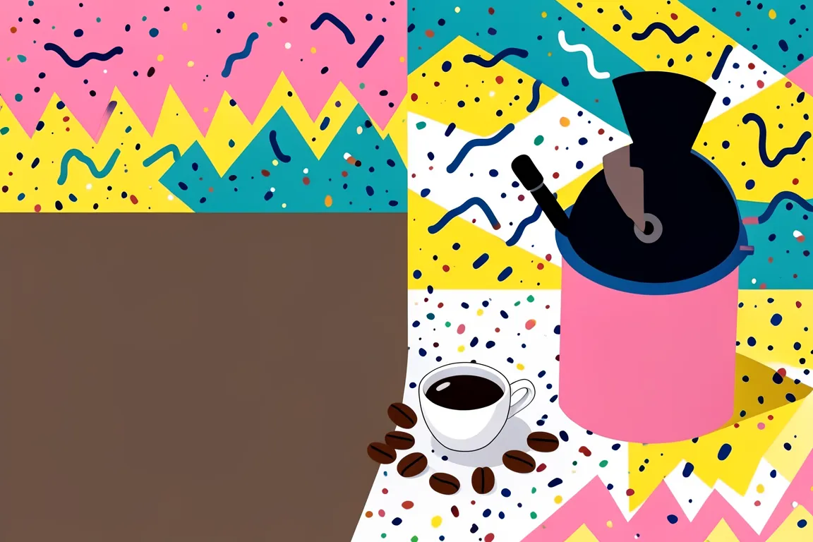

Kolliderende primær- og pastellflater, sikksakklinjer, konfettiprikker og svart-hvitt mønster på uregelmessige geometriske former. Ettore Sottsass og Memphis-gruppen lanserte det i Milano i 1981 som en spøk mot god smak.

Kjerneidé
God smak er en konvensjon, og en høylytt, billig, leken gjenstand kan bære like mye mening som en alvorlig.
Designprinsipper
Kombiner minst fire mettede fargetoner på én flate, og la ingen to nabofelt ha samme tone.
Bygg hver komposisjon av grunnformer: sirkler, trekanter, halvsirkler, buer og staver i 45 grader i størrelser mellom 24px og 320px.
Dekk ett eller to store områder med et gjentatt svart-hvitt mønster, som striper på 8px, prikker på 6px med 16px avstand eller en sikksakk.
Strø 6 til 20 små aksenter (sikksakklinjer, konfettiprikker, korte staver) over den tomme bunnen, og roter hver med en vinkel mellom -30 og 30 grader.
Sett displayskriften i en tung geometrisk sans-serif, og la ett ord bryte grunnlinjen eller helle 5 til 12 grader.
Gi formene harde svarte omriss på 3px og harde forskjøvne skygger uten uskarphet.
Plasser blokker ute av aksen og la dem overlappe med 10 % til 30 %, slik at ingen kant flukter med sidekanten.
Antimønstre
Én enkelt aksentfarge på en hvit side
Myke gradienter, uskarphet og realistiske skygger
Strenge sentrerte eller modulære rutenett med like marger
Tynne hårstreker under 2px
Dempede jordtoner og avmettede grå som hovedpalett
Symmetriske oppsett med én form gjentatt i én størrelse